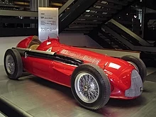
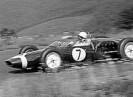

| Sezona | Vozač | Konstruktor/Tim | Pol Pozicije | Pobede | Podijum | Najbrži krugovi | Bodovi |
|---|---|---|---|---|---|---|---|
| 2000 | Mihael Šumaher | Ferrari | 9 | 9 | 12 | 2 | 108 |
| 2001 | Mihael Šumaher | Ferrari | 11 | 9 | 14 | 3 | 123 |
| 2002 | Mihael Šumaher | Ferari | 7 | 11 | 17 | 7 | 144 |
| 2003 | Mihael Šumaher | Ferari | 5 | 6 | 8 | 5 | 93 |
| 2004 | Mihael Šumaher | Ferrari | 8 | 13 | 15 | 10 | 148 |
| 2005 | Fernando Alonso | Reno | 6 | 7 | 15 | 2 | 133 |
| 2006 | Fernando Alonso | Reno | 6 | 7 | 14 | 5 | 134 |
| 2007 | Kimi Rajkonen | Ferrari | 3 | 6 | 12 | 6 | 110 |
| 2008 | Luis Hamilton | Meklaren | 7 | 5 | 10 | 1 | 98 |
| 2009 | Dženson Baton | Brawn | 4 | 6 | 9 | 2 | 95 |
| 2010 | Sebastijan Fetel | Redbul | 10 | 5 | 10 | 3 | 256 |
| 2011 | Sebastijan Fetel | Redbul | 15 | 11 | 17 | 3 | 392 |
| 2012 | Sebastijan Fetel | Redbul | 6 | 5 | 10 | 6 | 281 |
| 2013 | Sebastijan Fetel | Redbul | 9 | 13 | 16 | 7 | 397 |
| 2014 | Luis Hamilton | Mercedes | 7 | 11 | 16 | 7 | 384 |
| 2015 | Luis Hamilton | Mercedes | 11 | 10 | 17 | 8 | 381 |
| 2016 | Niko Rozberg | Mercedes | 8 | 9 | 16 | 6 | 385 |
| 2017 | Luis Hamilton | Mercedes | 11 | 9 | 13 | 7 | 363 |
| 2018 | Luis Hamilton | Mercedes | 11 | 11 | 17 | 3 | 408 |
| 2019 | Luis Hamilton | Mercedes | 5 | 11 | 17 | 6 | 413 |
| 2020 | Luis Hamilton | Mercedes | 10 | 11 | 18 | 6 | 347 |
| 2021 | Maks Ferštapen | Redbul | 10 | 10 | 18 | 6 | 395.5 |
Serija Formule 1 nastala je na Evropskom prvenstvu u trkama za Veliku nagradu 1920-ih i 1930-ih. Formula se sastoji od skupa pravila koja moraju da ispune svi automobili učesnika. Formula 1 je bila nova formula dogovorena tokom 1946. godine sa prvim nešampionskim trkama koje su se održavale te godine. Prva trka Formule 1 bila je Velika nagrada u Torinu 1946. Određeni broj trkačkih organizacija za Grand Prik je postavio pravila za svetsko prvenstvo pre Drugog svetskog rata, ali zbog suspenzije trka tokom sukoba, Svetsko vozačko prvenstvo nije postalo formalizovano sve do 1947. Prva trka svetskog šampionata održana je u Silverstonu u Ujedinjenom Kraljevstvu 1950. Đuzepe Farina je u svom Alfa Romeu osvojio prvo Svetsko prvenstvo za vozače 1950. godine, tesno pobedivši svog saigrača Huana Manuela Fanđa. Međutim, Fanđo je osvojio titulu 1951, 1954, 1955, 1956. i 1957. (njegov rekord od pet titula svetskog šampiona trajao je 45 godina sve dok Mihael Šumaher nije osvojio svoju šestu titulu 2003.). Fangiov niz prekinuo je (posle povrede) dvostruki šampion Alberto Askari iz Ferarija.
Usledilo je prvenstvo za konstruktore 1958. Iako je Britanac Stirling Mos mogao da se redovno takmiči, nikada nije uspeo da osvoji svetsko prvenstvo, a Independent ga je opisao kao „Najvećeg vozača koji nikada nije osvojio svetsko prvenstvo“. U periodu od sedam godina između 1955. i 1961. Mos je četiri puta završio kao vicešampion šampionata i tri puta na trećem mestu. Fanđo je, međutim, postigao rekord pobede u 24 od 52 trke na koje je učestvovao - rekord koji važi do danas. Državna prvenstva postojala su u Južnoj Africi i Velikoj Britaniji 1960-ih i 1970-ih. Događaje Formule 1 koji nisu šampionati održavali su promoteri dugi niz godina. Međutim, zbog sve veće cene konkurencije, poslednji od njih dogodio se 1983.
U ovom periodu nastupili su timovi kojima upravljaju proizvođači drumskih automobila Alfa Romeo, Ferari, Mercedes-Benz i Maserati. Prve sezone su predstavljale predratne automobile kao što je Alfa 158. Bili su sa prednjim motorom, sa uskim gumama i 1,5-litarskim motorima sa kompresorom ili 4,5-litarskim atmosferskim motorima. Svetsko prvenstvo 1952. i 1953. godine vođeno je prema propisima Formule 2, za manje, manje moćne automobile, zbog zabrinutosti zbog nedostatka dostupnih automobila Formule 1. Kada je nova formula Formule 1 za motore ograničene na 2,5 litara vraćena na svetsko prvenstvo za 1954. Mercedes-Benz je predstavio napredni V196. Ovo je uključivalo inovacije kao što su desmodromski ventili i ubrizgavanje goriva, kao i zatvorena aerodinamična karoserija. Vozači Mercedesa su dve godine osvajali šampionat, pre nego što se tim povukao iz svih moto sporta posle katastrofe u Le Manu 1955. godine.
Prvi veliki tehnološki razvoj, Bugatijevo ponovno uvođenje automobila sa srednjim motorom (nakon pionirskog Auto Uniona Ferdinanda Poršea iz 1930-ih), dogodio se sa Tipom 251, koji je bio neuspešan. Australijanac Džek Brabam, svetski šampion tokom 1959, 1960. i 1966. godine, ubrzo je dokazao superiornost dizajna sa srednjim motorom. Do 1961. svi redovni takmičari su prešli na automobile sa srednjim motorom. Ferguson P99, dizajn sa pogonom na sva četiri točka, bio je poslednji F1 automobil sa prednjim motorom koji je učestvovao u trci svetskog šampionata. Učestvovao je na Velikoj nagradi Velike Britanije 1961. godine, jedini automobil sa prednjim motorom koji se takmičio te godine.
Tokom 1962. Lotus je predstavio automobil sa monokok šasijom od aluminijumskog lima umesto tradicionalnog dizajna sa prostornim okvirom. Ovo se pokazalo kao najveći tehnološki napredak od uvođenja automobila sa srednjim motorom. Tokom 1968. Tim Gunston je postao prvi tim koji je pokrenuo sponzorstvo cigareta na svojim automobilima Brabham, koji su privatno učestvovali u narandžastoj, braon i zlatnoj boji na Velikoj nagradi Južne Afrike 1968. 1. januara 1968., čime je uveo sponzorstvo u sport. Pet meseci kasnije, Lotus kao prvi tim pratio je ovaj primer kada su ofarbali Imperial Tobacco livreju na svoje automobile na Velikoj nagradi Španije 1968. godine.
Aerodinamička sila pritiska polako dobija na značaju u dizajnu automobila sa pojavom aeroprofila tokom kasnih 1960-ih. Tokom kasnih 1970-ih, Lotus je uveo aerodinamiku sa efektom tla (ranije korišćenu na Jim Hall-ovom Chaparral 2J tokom 1970. godine) koja je obezbedila ogromnu silu pritiska i znatno povećala brzinu u krivinama. Aerodinamičke sile koje su pritiskale automobile na stazu bile su do pet puta veće od težine automobila. Kao rezultat toga, bile su potrebne izuzetno čvrste opruge da bi se održala konstantna visina vožnje, ostavljajući vešanje praktično čvrstim. To je značilo da su vozači u potpunosti zavisili od guma za bilo kakvu malu količinu amortizacije automobila i vozača od nepravilnosti na površini puta.
Ako želite da saznate još pođite na: Link za ostatak istorije!